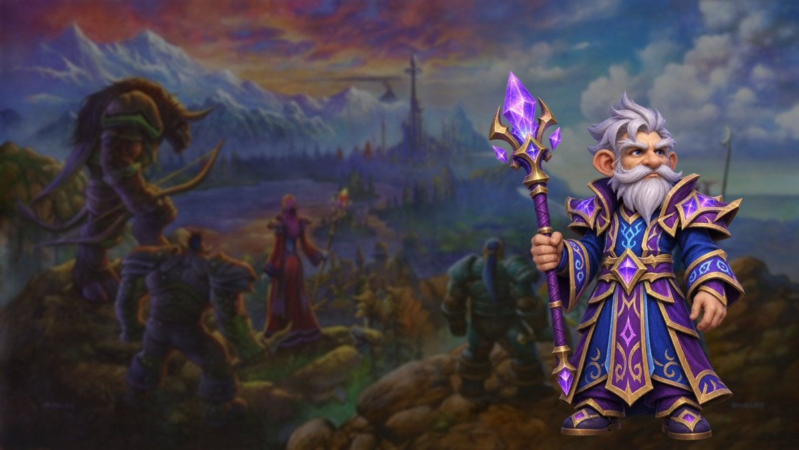

News › Mon build de leveling
Mon build de leveling : mage Arcanes 36/12/3
4 novembre 2026
Le grand soir approche ! Pour mon premier personnage, je pars sur un mage Arcanes, avec le build de leveling proposé par JudgeHype. Voici l'ordre des talents, la rotation et mes petits conseils.

Sortie de WoW Forever dans…5 novembre, 0 h (heure de Paris)
Le build
36 points en Arcanes, 12 en Feu, 3 en Givre. On mise sur Déflagration et Colère des arcanes, avec Barrage de projectiles pour des Projectiles renforcés gratuits, et un détour par le Feu pour l'Empressement, l'Incinération et un Trait de feu plus souvent disponible.
Ouvrir ce build dans le calculateur ↗
L'ordre des points
- 1-2 Spécialisation Baguette
- 3 Précision
- 4-6 Canalisation améliorée
- 7-8 Barrage de projectiles
- 9-10 Subtilité des arcanes
- 11 Canalisation améliorée
- 12 Déflagration des arcanes
- 13-14 Concentration des arcanes
- 15 Canalisation améliorée
- 16 Concentration des arcanes
- 17 Colère des arcanes
- 18-19 Concentration des arcanes
- 20-22 Méditation des arcanes
- 23 Précision
- 24-28 Esprit des arcanes
- 29 Présence spirituelle
- 30-32 Impact des arcanes
- 33-35 Instabilité des arcanes
- 36-40 Empressement
- 41-45 Incinération
- 46 Pouvoir des arcanes
- 47 Précision
- 48-49 Géométrie des arcanes
- 50-51 Trait de feu amélioré
La rotation en montant
- Une ou deux Déflagrations des arcanes, en guettant le Barrage de projectiles.
- Les Projectiles des arcanes renforcés dès qu'ils sont prêts.
- Colère des arcanes juste après.
- On achève au Trait de feu si la cible résiste, ou à la baguette pour économiser le mana.
Mes conseils
- J'ouvre à l'Éclair de givre pour ralentir, et je garde Nova de givre pour reprendre de la distance.
- Au niveau 24, le rang 3 des Projectiles des arcanes tire cinq projectiles : gros palier.
- Eau et gemme de mana toujours prêtes avant de partir.
- Pas la peine de monter à quatre charges de Déflagration sur un simple monstre de quête : le mana part trop vite.
Rendez-vous ce soir à minuit ! Les autres builds sont sur la page Guides de spé, et les quêtes dans le leveling pas à pas.
Build d'après le guide du mage Arcanes de JudgeHype.